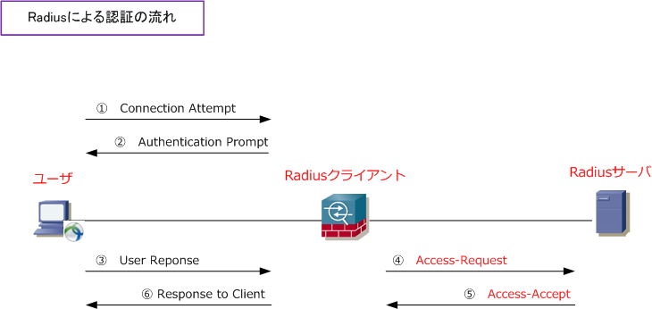
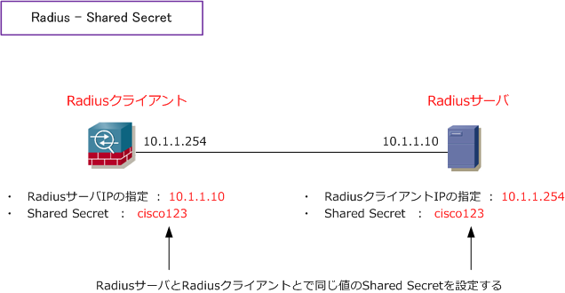
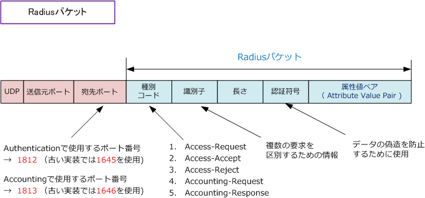

Radius Authentication
Radiusとは
Radius（Remote Authentication Dial In User Service）は、ネットワーク上のユーザ認証プロトコルの 1つです。Radiusは、電話回線でダイヤルアップ接続の方式を利用するユーザに対してインターネット接続 を実現するための認証プロトコルとして当初は使用されていました。ユーザ認証だけでなくネットワークの 接続時間やデータ量の情報も収集できるため、ISPなどでは認証ユーザの課金などでも利用していました。 現在では無線LANや有線LANでのネットワーク接続時のユーザ認証のプロトコルとしても利用されています。
Radiusによる認証システムはRadiusサーバ、Radiusクライアント、ユーザーの3つの要素で構成されます。 RadiusクライアントはNAS（Network Access Server）とも呼ばれます。アクセスしてくるユーザの認証 要求を受け付けてRadiusサーバにその情報を転送するのがRadiusクライアントです。その認証要求に応じて 認証を実行してアクセスを許可するかどうかを決定するのはRadiusサーバ。認証時に使用するユーザ情報は Radiusサーバがローカルデータベースとして保持するか、外部データベースとして保持することができます。

PCからRadiusクライアントに送信されたユーザ名とパスワードは、RadiusクライアントからRadiusサーバへ Access-Requestメッセージとして送信されます。Radiusサーバは、送信されてきた情報と、Radiusサーバが 保持している情報とを照らし合わせて、正規ユーザかどうかを識別します。正規ユーザだと判断できた場合は RadiusサーバはAccess-AcceptメッセージでRadiusクライアントに伝えて、その情報がユーザに伝えられます。
不正なRadiusクライアント（サーバ）からの接続要求の排除
RADIUSでは、不正なRadiusクライアント、または不正なRadiusサーバからの接続要求を排除するために、 Radiusクライアント ⇔ Radiusサーバ間で共有暗号鍵（Shared Secret）を事前に設定しておきます。また、 RadiusサーバとRadiusクライアントともに連携する同士のIPアドレスを指定します。これらの設定によって、 不正なRadiusクライアント、Radiusサーバとが通信を行うこと(不正な接続要求)を防止することができます。

Radiusパケット
Radiusプロトコルはリモートアクセス環境で認証情報やアカウンティング情報をやりとりするプロトコルで、 Radiusパケットには下図の通り「種別コード、識別子、長さ、認証符号、属性値ペア」の情報が含まれます。 RadiusパケットはUDP上で転送されます。Radiusの認証（Authenticatoin）にはポート番号 1812 を使用し、 Radiusのアカウンティング（Accounting）にはポート番号 1813 を使用します。

| Radiusパケット（ 種別コード ） | 説明 | コード |
|---|---|---|
| Access-Request | 認証要求 | コード 1 |
| Access-Accept | 認証（認可）による許可 | コード 2 |
| Access-Reject | 認証（認可）による拒絶 | コード 3 |
| Accounting-Request | 課金要求 | コード 4 |
| Accounting-Response | 課金要求に対する応答 | コード 5 |
Radiusプロトコルでは、「属性と値」のペアで構成される属性値ペアというフォーマットで、色々な情報を やりとりします。属性値ペアはAVペアと呼ばれたりアトリビュートとも呼ばれています。冒頭の図でも説明 している通り、ユーザ名やパスワード情報もこの属性値ペアによって、Radiusサーバに引き渡されています。 値は「数字」または「文字列」が渡されます。Cisco IOSがサポートしている（属性値ペア）の一部を紹介。
Cisco IOS サポート
| 属性番号 | IETF Attribute | 説明 |
|---|---|---|
| 1 | User-Name | Radiusサーバにより認証されるユーザ名 |
| 2 | User-Password | ユーザのパスワード、またはAccess-Challengeに続くユーザの入力 |
| 3 | CHAP-Password | CHAPのパスワード。Access-Challengeに対する応答（ユーザが入力した応答値） |
| 4 | NAS-IP Address | 認証を要求しているNetwork Access Server(NAS）のIPアドレス。 |
| 5 | NAS-Port | ユーザを認証しようとしているNASの物理ポート番号。16ビットの値で構成。 |
| 6 | Service-Type | 要求されたサービスのタイプ。 特定の数値で示される。1：Login、 2：Framed 3：Callback-Login、4：Callback-Framed、 5：Outbound、 6：Administrative、 7：NAS-Prompt、8：Authenticate Only、 9：Callback-NAS-Prompt |
| 7 | Framed-Protocol | フレーム構成。フレーム構成は以下の数値で指定される。 1：PPP 2：SLIP 3：ARA 4：Gandalf独自プロトコル 5：Xylogics 独自のIPX/SLIP |
| 8 | Framed-IP-Address | ユーザに指定するIPアドレス。 Access-Request内でユーザのIPアドレスをRADIUSサーバに送信することで、 ユーザに対して設定するIPアドレスを示す。Cisco IOSでは次のコマンドで有効 になる。 (config)# radius-server attribute 8 include-in-access-req ※ 受け入れられる値は、0xFFFFFFFF ( ユーザーがアドレスを選択 ) と 0xFFFFFFFE ( リモート アクセス サーバーがアドレスを選択 ) のみとなる。 |
RadiusはRASの認証手段として開発されましたが、その後にEAPを取り込むなどして発展を続けています。